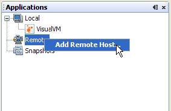

Connecting to JMX Agents Explicitly
Java Management Extentions (JMX) technology can be used to monitor and manage any Java technology-based applications (Java applications) that are running in either a local or a remote Java Virtual Machine (JVM). Java applications are exposed for monitoring and management by JMX agents by setting the com.sun.management.jmxremote.* system properties when the applications are launched. Setting these system properties enables the Java platform, Standard Edition's (Java SE platform) out-of-the-box monitoring and management capability, automatically enabling the platform MBean server in the JVM software, and registering MBeans in that MBean server that expose the application for management by any appropriately configured JMX client application. VisualVM is one such JMX client application. This page describes how to make explicit JMX connections from VisualVM to running applications. The documents below provide useful background information.
Making an Explicit JMX Connection
Before you can make an explicit JMX connection from VisualVM to a running application, this application must be started with the correct system properties. The system properties in question are the following:
com.sun.management.jmxremote.port, to specify the port number through which the application will be exposed com.sun.management.jmxremote.ssl, to specify whether secure sockets layer (SSL) encyption will be activated to secure the connection to the application com.sun.management.jmxremote.authenticate, to specify whether the connection will be password protected
Local JMX Connection
This section shows an example of how to connect VisualVM to a local application via an explicit JMX connection.
- Start the Java SE 6 platform's sample Notepad application, setting the system properties to enable the Java SE platform's out-of-the-box monitoring and management capability, using the command shown below, where $JAVA_HOME is the location in which the Java Development Kit (JDK) is installed:
java -Dcom.sun.management.jmxremote.port=3333 \
-Dcom.sun.management.jmxremote.ssl=false \
-Dcom.sun.management.jmxremote.authenticate=false \
-jar $JAVA_HOME\demo\jfc\Notepad\Notepad.jarIn the command above, the Notepad program is launched with the Java SE platform's out-of-the-box monitoring and management capability configured as follows:
- The Notepad application is exposed for monitoring and management via port 3333.
- SSL encryption is deactivated.
- Password authentication is deactivated.
- Start VisualVM on the same machine.
- In VisualVM's Applications window, right click on the Local machine and select 'Add JMX Connection'.

- The Add JMX Connection dialog box opens.

The host name localhost is already filled in. You only need to add the port number on which the Notepad application is exposed for monitoring and management.
- Click OK. The JMX connection will appear in the application tree, with a special JMX connection icon.

- Right click on the JMX connection, and select Open. The application exposed via the JMX connection can now be monitored and managed via VisualVM.

Remote JMX Connection
You can also make explicit JMX connections to applications running on remote hosts, as explained below:
- Right click on Remote in the Applications tree, and select Add Remote Host.

- Provide the name of the host you want to connect to in the Add Remote Host dialog, and click OK.

- If jstatd is running on the remote host, you will see the Java applications that are running on that remote host. However, you will not necessarily be able to monitor and manage them in VisualVM if they were started by a different user to yourself.

Furthermore, only applications that are exposed by the platform MBean server for each JVM software instance running in the remote host are visible. Other applications that have been exposed for remote monitoring and management via a different JMX agent to the platform MBean server can also be running on the remote host. To connect to these applications, you need an explicit JMX connection.
- Right click on the remote host name and select Add JMX Connection.

- Provide the port number for a running JMX agent, that has been started with the appropriate system properties to allow remote management.
Here the JMX agent has been exposed on port 2222 of the machine curcuma.

- If the JMX connection is secured, you will be prompted for a username and password.

- If you know the correct username and password, the JMX connection will be established, and the JMX connection will appear in the application tree, with a special JMX connection icon.

- Right click on the remote JMX connection and select Open. You can now monitor and manage remote applications via the JMX connection, and manipulate any MBeans that are registered in the MBean server exposed by this connection.

Further Reading About JMX Technology
For more information about JMX technology and monitoring and management of the Java SE platform, see the following documents.